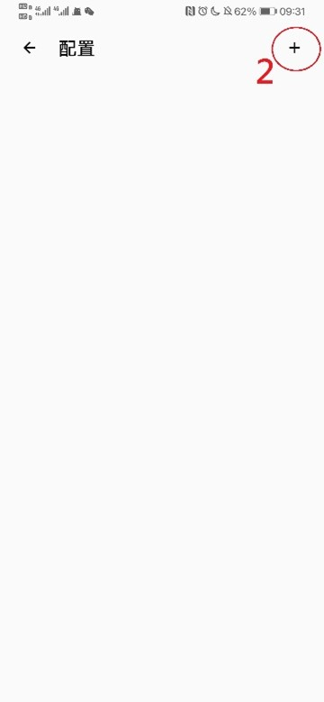

配置手冊
20 本 羅俊熙
June 28, 2022 Edition
目錄
2021/10/08 : 更新線路，新增手動配置參數。
2022/02/27 : 更新Walless PKU的安裝教學。
2022/06/28 : 將yaml文件下載點改至Github，新增Shadowrocket攔截廣告教學。
訂閱網址：
| 訂閱配置文件 | https://macau-mcca.github.io/mcca.yml |
|---|---|
| Clash下載地點 | Windows or Mac: https://github.com/Fndroid/clash_for_windows_pkg/releases Android: https://github.com/Kr328/ClashForAndroid/releases |
| Shadowrocket配置文件 | https://macau-mcca.github.io/adblock.conf |
此配置手冊的作用為教大家如何安裝及使用VPN，因MCCA所配置的VPN是在外租用的，而且每個月能用的流量並不是無限，所以希望各位MCCAers不要隨便將VPN公開給其他同學，不要瀏覽一些奇怪的網站，避免伺服器被攻擊。
一般情況下VPN能夠讓大家用於使用Google, Line, Facebook, Instagram及YouTube (480P左右)等等，若有任何問題或是嚴格遵守此手冊的方法都不能運行VPN，請在MCCA吹水群找20本 物院 羅俊熙，我在有空時會第一時間幫大家解決。
在提問時，記得提及1. 你使用的手機；2. 你所在的地方；3. 你所使用的網絡；4. 問題的詳細描述；5. 一大堆圖片。這樣做能幫忙你更快得到幫助，同時也能為小弟節省下不少的時間，謝謝
Walless PKU是北大校友搞出來的VPN伺服器，其用意是幫助北大學生在進行學術研究時更為方便，每人有最多20GB的流量，每天會補充2GB。當然我們作為北大學生/校友也可以得到這樣的待遇。
大家可以前往https://wallesspku.com/處得到更多資訊或是安裝教學，也可以看這個文檔來進行安裝。
這裡注意有些人的郵箱是有別名的，因此你需要到寄件箱 (己發送) 中，找到自己寄出的郵箱是甚麼，這裡我們可以看到我所寄出的郵箱是seelooooo@stu.pku.edu.cn
https://github.com/macau-mcca/vpn/releases/download/mcca-vpn-setting/mcca.yml
然後按下Download
則打開General，將System Proxy打開即可
前往Github下載Clash for Windows 副檔名為dmg的。
打開，然後拖動至進右方的資料夾安裝
找到ClashX並打開它
在畫面右上方找到小貓咪，然後打開Config進行配置
點選add，然後在url輸入
https://macau-mcca.github.io/mcca.yml
Name可以隨意填寫，然後按OK
按一下update
把set as system proxy勾選後就可以使用VPN了
用一切方法得到 Shadowrocket，並下載和安裝
\需要錢*
*
打開程式後按右上方的加號，然後將型別設定成Subscribe，在URL一行中寫入
https://macau-mcca.github.io/mcca.yml
*
完成後，要打開VPN，只需在每個不同的線路中，選上ms數最低的那個即可 (注意，不要選到ms數少於10的，極大機會用不了)，然後把連線打開即口 (第一次可能需要輸入密碼同意其修改手機的網絡設定)
(若要更新線路，只需點上圖中www.mcca.xyz右方的感嘆號，然後再按一下完成即可)
https://macau-mcca.github.io/adblock.conf
https://github.com/Kr328/ClashForAndroid/releases
又或是前往google play找到 Clash For android這一應用程式
前往配置，按右上方加號，點選從URL導入

名稱可以亂寫，URL寫
https://macau-mcca.github.io/mcca.yml
自動更新建議為240分鐘，最後按右上方儲存
按右邊的三點，然後按更新
退回去目錄，按一下中間就能夠打開VPN了
考慮到許多人已經安裝其他VPN程序，而未必全部都支援使用yaml設定，大家也可以在瀏覽器中輸入
https://macau-mcca.github.io/mcca.yml
下載文件後，找到對應的線路設定進行手動設定!
十分感謝譚家豪師兄提供的一切幫助，還有他長期對mccavpn的維護。